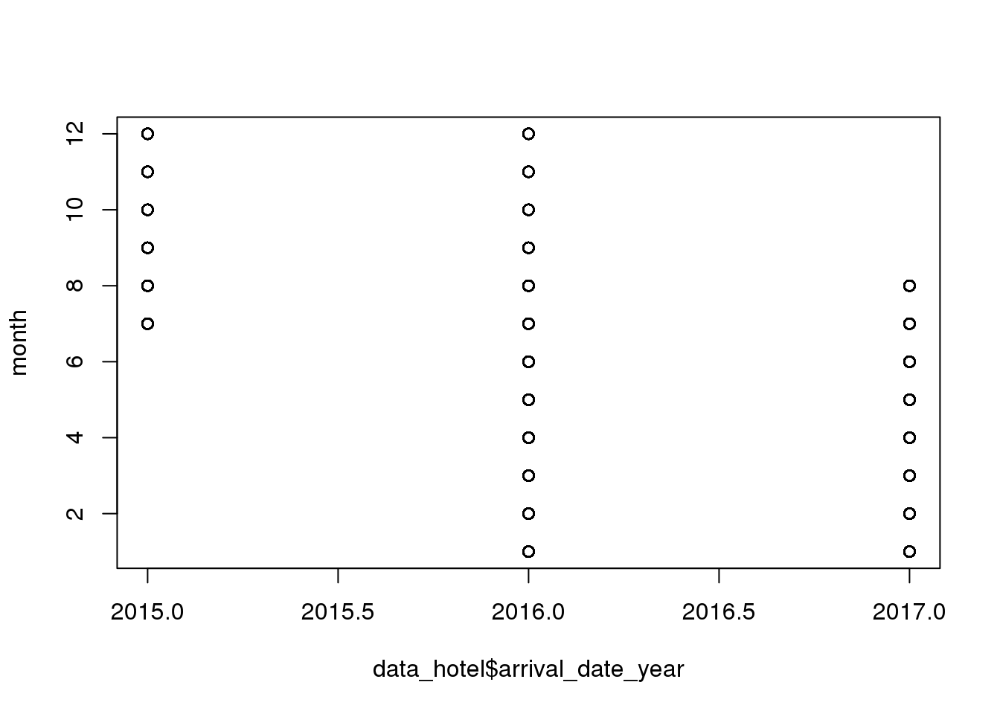
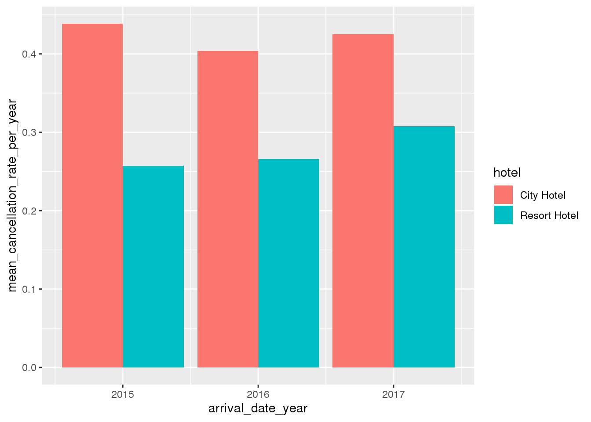
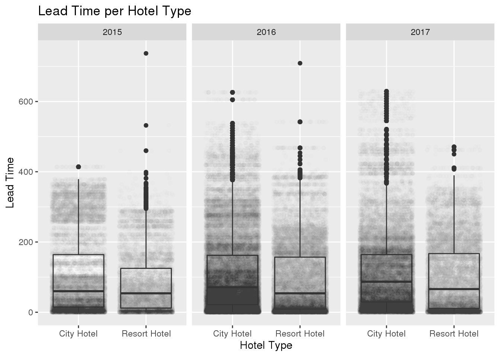
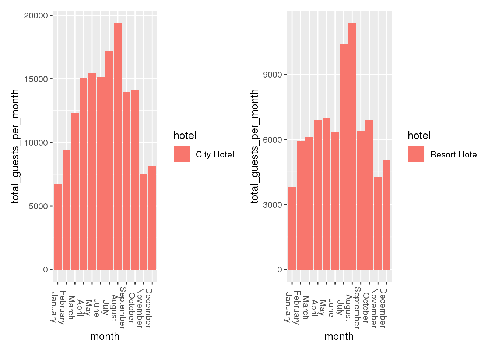

knitr::opts_chunk$set(echo = TRUE, tidy = TRUE)
library(here)
library(ggplot2)
library(tidyverse)
library(readxl)
library(patchwork)
library(rgdal)
data_hotel_dirty <- read.csv(here("content", "post", "2020-12-07-hotel-analysis", "hotelbooking_data.csv"))
data_hotel <- na.omit(data_hotel_dirty)
#str(data_hotel)The first dataset I chose was the Hotel Booking Demand dataset from Kaggle.com, this dataset is originally from the article Hotel Booking Demands Datasets, written by Nuno Antonio, Ana Almeida, and Luis Nunes for Data in Brief, Volume 22, February 2019. Thomas Mock and Antoine Bichat are responsible for cleaning the original data. This dataset contains booking information for two hotels but since the hotels mentioned are real hotels any data pertaining to customer or hotel identification has been deleted. By analyzing the data I hope to determine if there is a difference in cancellation rates or lead times between the two hotels as well as determine which month is the busiest for the hotels and determine the respective lead times for each month.
While performing exploratory data analysis I gained a few insights about the data. Firstly, the dataset only contains data from July 2015 - August 2017 meaning that when looked at on a per year basis 2015 and 2017 will contain less months worth of data, this should be kept in mind when comparing the years to each other.
month <- factor(data_hotel$arrival_date_month, levels = month.name)
# awful_table <- table(data_hotel$hotel, data_hotel$arrival_date_year, month)
# print(awful_table)
plot.default(data_hotel$arrival_date_year, month)
Continuing my exploratory analysis I wanted to compare the number of transactions per hotel type for year. When just looking at the below table it looks like the hotels are experiencing a decrease in number of transactions but as mentioned above we need to remember that 2016 is the only year in this dataset that we have a full 12 months of data for.
What the below table can tell us is that the city hotel experiences more transactions than the resort hotel. Without more data we are unable to determine if the larger number of transactions is due to the city hotel being more popular than the resort hotel or if the city hotel is simply bigger than the resort hotel thus having more rooms and more booking transactions or it is possible that guests tend to stay longer at the resort hotel making the city hotel have a faster room turnover making it look busier when in actuality it is simply the number of transactions that is larger.
table(data_hotel$hotel, data_hotel$arrival_date_year)##
## 2015 2016 2017
## City Hotel 13678 38140 27508
## Resort Hotel 8314 18567 13179The last two variables I looked at were lead time and cancellations. I wanted to get a broad idea of what the average lead time (time between booking a reservation and showing up at the hotel) and cancellation rates were. Based on this high-level viewing I saw that the average lead time is 104 days and the average cancellation rate is 37%.
summary(data_hotel$lead_time)## Min. 1st Qu. Median Mean 3rd Qu. Max.
## 0 18 69 104 160 737summary(data_hotel$is_canceled)## Min. 1st Qu. Median Mean 3rd Qu. Max.
## 0.0000 0.0000 0.0000 0.3704 1.0000 1.0000The first question I sought to answer was to determine if there is a difference in cancellation rates between the two types of hotels. I attempted to answer this question by generating a table that grouped the data by hotel type and year and then I took the average of all the data points in that specific section and generated an average of the is_canceled column to determine what the cancellation rate is for that hotel in a given year. Based of the below table we can see that there is a marked numerical difference between the cancellation rate for the city hotel and the one for the resort hotel. The city hotel’s cancellation rate has hovered between 40%-43% over the 3 years of data and the resort’s cancellation rate has been between 25% and 30% over the same time frame. The cancellation rate for the city hotel has stayed relatively stable across all three years, I did not notice either an increasing or decreasing trend. However for the resort hotel the cancellation rate has been increasing over the three years of data, this is not a long enough time frame to determine if this is actually a trend but it is an interesting observation.
data_hotel %>% group_by(hotel, arrival_date_year) %>% summarize(mean_cancellation_rate_per_year = mean(is_canceled))## # A tibble: 6 x 3
## # Groups: hotel [2]
## hotel arrival_date_year mean_cancellation_rate_per_year
## <fct> <int> <dbl>
## 1 City Hotel 2015 0.439
## 2 City Hotel 2016 0.404
## 3 City Hotel 2017 0.425
## 4 Resort Hotel 2015 0.257
## 5 Resort Hotel 2016 0.266
## 6 Resort Hotel 2017 0.308data_hotel %>% group_by(hotel, arrival_date_year) %>% summarize(mean_cancellation_rate_per_year = mean(is_canceled)) %>%
ggplot(aes(arrival_date_year, mean_cancellation_rate_per_year, fill = hotel)) +
geom_bar(position = "dodge", stat = "identity")
The second question I explored was is there a difference in lead times between the two types of hotels. I sought to answer this question by again generating a table that sorted the data by hotel type and year but then I used lead time as my variable of interest to determine what the average lead time was for each hotel by year. I also generated a box plot so that I could visually see the difference in the data distribution for the two hotel types in regard to lead time and faceted this by year to display the difference in hotel types and annual trend. Upon performing these analyses I was able to determine that there is a difference in lead time between the two hotels. The city hotel has a longer lead time than the resort with the mean for the city hotel being approximately 109 days for all three years of data and the mean for the resort being 91 days. Another thing we can see is that the lead times for both hotels has been increasing over the three years of data included in the dataset.
data_hotel %>% group_by(hotel, arrival_date_year) %>% summarize(mean_lead_time = mean(lead_time),
median_lead_time = median(lead_time))## # A tibble: 6 x 4
## # Groups: hotel [2]
## hotel arrival_date_year mean_lead_time median_lead_time
## <fct> <int> <dbl> <dbl>
## 1 City Hotel 2015 106. 60
## 2 City Hotel 2016 108. 71
## 3 City Hotel 2017 114. 87
## 4 Resort Hotel 2015 83.3 54
## 5 Resort Hotel 2016 92.1 54
## 6 Resort Hotel 2017 99.4 66data_hotel %>% group_by(hotel) %>% ggplot(aes(hotel, lead_time)) + geom_boxplot() +
facet_wrap(~arrival_date_year) + geom_point(position = "jitter", alpha = 0.008) +
xlab("Hotel Type") + ylab("Lead Time") + ggtitle("Lead Time per Hotel Type")
The third question I attempted to answer was determining which month was the busiest for each type of hotel. To start I had to make a new variable (month) which took the arrival month and sorted them in chronological order instead of alphabetical order. I also had to create a second new variable (total_guests_per_day) to sum the adults, children and babies columns so I could more easily compare the number of guests. I then used hotel type and my new variable ‘month’ to group the data and then I summed my other new variable ‘total_guests_per_day’ to determine the total number of guests each hotel had in a specific month. Based off the resulting table I was observed that the city hotel has high visitation rates during the time of year when people often travel for work, which also explains the lower visitation rates from November through February as most business trips are not scheduled around the holidays. The resort hotel experiences a spike in number of guests during the summer season and has a relatively steady number of guests for the rest of the year (with November-January experiencing the lowest number of guests - probably due to the holiday season).
data_hotel$month <- factor(data_hotel$arrival_date_month, levels = month.name)
data_hotel$total_guests_per_day <- data_hotel$adults + data_hotel$children + data_hotel$babies
data_hotel %>% group_by(hotel, month) %>% summarize(total_guests_per_month = sum(total_guests_per_day))## # A tibble: 24 x 3
## # Groups: hotel [2]
## hotel month total_guests_per_month
## <fct> <fct> <int>
## 1 City Hotel January 6721
## 2 City Hotel February 9376
## 3 City Hotel March 12333
## 4 City Hotel April 15101
## 5 City Hotel May 15464
## 6 City Hotel June 15116
## 7 City Hotel July 17203
## 8 City Hotel August 19392
## 9 City Hotel September 13961
## 10 City Hotel October 14133
## # … with 14 more rowsq1 <- data_hotel %>% filter(hotel == "City Hotel") %>% group_by(hotel, month) %>%
summarize(total_guests_per_month = sum(total_guests_per_day)) %>% ggplot(aes(month,
total_guests_per_month, fill = hotel)) + geom_histogram(stat = "identity") +
theme(axis.text.x = element_text(angle = -90))## Warning: Ignoring unknown parameters: binwidth, bins, padq2 <- data_hotel %>% filter(hotel == "Resort Hotel") %>% group_by(hotel, month) %>%
summarize(total_guests_per_month = sum(total_guests_per_day)) %>% ggplot(aes(month,
total_guests_per_month, fill = hotel)) + geom_histogram(stat = "identity") +
theme(axis.text.x = element_text(angle = -90))## Warning: Ignoring unknown parameters: binwidth, bins, pad(q1 | q2)
After observing and analyzing this dataset I came across a few issues. Firstly I wish the dataset included some financial information, since this dataset is about a business I think it would have been appropriate to include that type of information and think it could have produced some interesting insights, for example - I think it would have been interesting to see if there is a relationship between cancellation rate and deposit amount. As previously mentioned a weakness/challenge of the data (depending on how you view it) was that the dataset split the data up into three years but those years contained difference numbers of months of observations, skewing the data if you looked at it on a yearly basis.
My analysis focused on comparing the two hotels and then looking at each hotel individually. I believe these hotels to be located in the United States of America or somewhere near the American continents because of the ebb and flow of the number of guests per month. The resort hotel maintained a relatively steady stream of customers throughout the year and then experienced a spike in July and August which coincides with the American summer break. I also believe the dips both hotels saw in number of customers during the months of November, December and January can be explained by the importance of the festive season. Most people go and visit family during these months and are more likely to crowd into a relative’s house then to book a room in a hotel. The difference in cancellation rates (40%-43% for the city hotel and 25%-30% for the resort hotel) make me think that there are more alternative places to stay in the city where the city hotel is located compared to the location of the resort hotel.